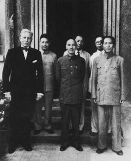

重庆谈判

1945年中日抗战结束，中国国内的阶级矛盾逐渐上升为社会的主要矛盾，在美国支持下，以国民党为代表的大地主大资产阶级欲争夺抗日战争的胜利果实，建立全国性的独裁统治，与以中国共产党为代表的人民大众热切要求建立独立、自由、民主、统一和富强的新中国的要求相矛盾。毛泽东同志为了广大人民迫切想要休养生息的强烈医院，尽一切可能争取国内和平，毅然决然参加谈判。
从1945年8月29日至10月10日，经过43天谈判，国共双方达成《政府与中共代表会谈纪要》，即《双十协定》。
重庆谈判及达成的《双十协定》给中国人民带来了和平、民主、团结的希望和曙光。虽然国民党统治集团违背全国人民迫切要求休养生息、和平建国的意愿，在1946年6月底全面撕毁《双十协定》 ，但其历史意义和启示仍是非常重大的。